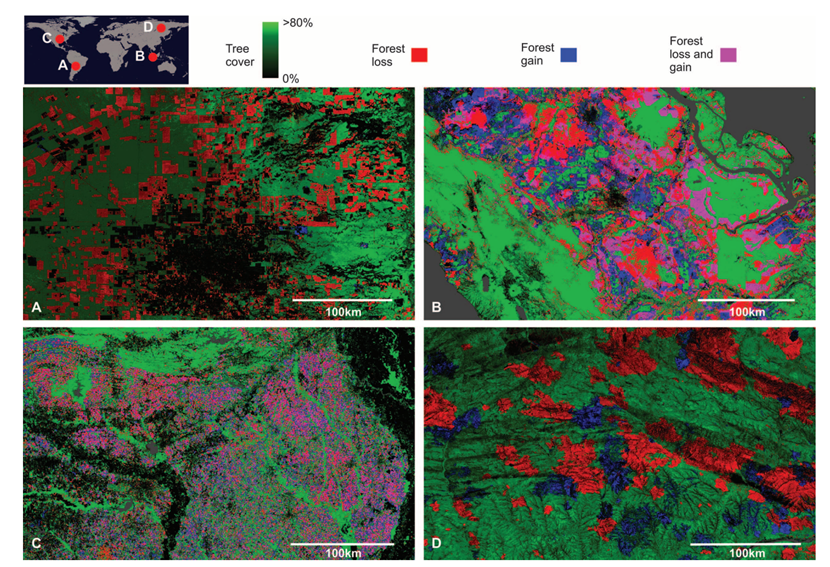
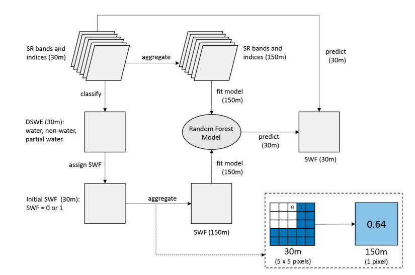
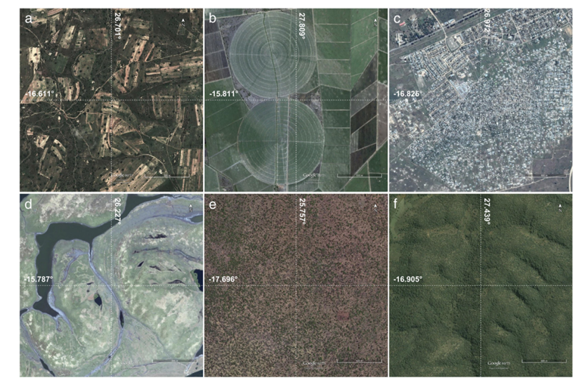

5 Week 6 Learning Diary
6 Week6
6.1 Summary: Google Earth Engine in Remote Sensing
In this week’s course, we learnt about Google Earth Engine (GEE), a widely used cloud computing platform in remote sensing, which is a geospatial analysis platform based on cloud computing technology launched by Google. The most important feature of GEE is that it can process large-scale remote sensing data online in real time, helping researchers to easily analyse and visualise complex geospatial data without being limited to the performance constraints of local computers (Gorelick et al., 2017).
The course highlights the difference between two key concepts of GEE data processing: client-side and server-side. Client-side processing relies on the performance of the user’s own computer and is suitable for simple tasks, whereas server-side processing takes advantage of the powerful computing capabilities of the Google Cloud and can efficiently parallelise complex tasks. This means that we should use server-side functions whenever possible when using GEE to improve processing efficiency (Mutanga and Kumar, 2019).
In practice, we learnt the data filtering methods of GEE, such as filterDate() (time range filtering) and filterBounds() (spatial range filtering). Proper use of these filtering methods can significantly reduce the amount of computation and avoid unnecessary data downloads and memory errors (Gorelick et al., 2017). In addition, the data visualisation function of GEE is powerful; by adjusting the appropriate spatial resolution and band combination, we can quickly view the features of satellite images, such as vegetation, water bodies or urban areas.
Data reduction and statistical analysis is also one of the important functions of GEE. We specifically learnt about zonal statistics and image reduction. Zonal statistics, such as the reduceRegion() function, can easily calculate the Normalized Difference Vegetation Index (NDVI) or rainfall for a specific region, which is widely used in agricultural monitoring and ecological research (Amani et al., 2020). Image downscaling can use methods such as median() or mean() to efficiently handle large amounts of data, thus reducing the computational resources required for analysis.
Taken together, this week’s course demonstrates how the combination of cloud computing and remote sensing technology has significantly lowered the technical barrier to remote sensing analysis and increased the availability and efficiency of data analysis.
6.2 Application
Google Earth Engine (GEE) has been widely used in many fields, such as environmental monitoring, agricultural production management, climate change analysis and disaster response, due to its powerful cloud computing capability and rich data resources.
One of the application cases that impresses me is the long-term monitoring of land cover changes using the GEE platform. In this week’s reading, I learnt about a study on high-resolution analysis of global forest change based on GEE. The study took full advantage of GEE’s cloud computing and processed more than 650,000 Landsat satellite images, resulting in fine-grained monitoring of forest change on a global scale.
In the past, this type of global-scale big data processing was often extremely time-consuming, but with the capability of GEE, the efficiency and accuracy of the study can be greatly improved (Hansen et al., 2013).

Fig. 1 Regional examples of forest cover change from 2000 to 2012
Source: Hansen et al. (2013)
Not only forest monitoring, GEE has important applications in disaster response. For example, flood monitoring, in the past, when floods occurred, it has been a challenge to obtain timely information about the affected area. Maps of flood-affected areas can be quickly generated by GEE, which significantly improves the efficiency of disaster response operations (DeVries et al., 2017). Specifically, Sentinel-1 radar imagery can be rapidly analysed on the GEE platform, which is able to ‘cut through’ clouds and bad weather, providing accurate and timely data to support relief operations even under adverse weather conditions.

Fig. 2 Flowchart of the SWF estimation algorithm demonstrated in this study
Source: DeVries et al. (2017)
In addition, I am particularly interested in the application of GEE in agriculture. We can use the GEE platform to monitor the production of corn in the Midwest region of the U.S. in real time, and by calculating the vegetation indices (e.g., NDVI) in satellite images, we have established a crop yield prediction model (Azzari and Lobell, 2017). This method is more timely and accurate than traditional ground observation, and can help the agricultural sector make decisions in advance and optimise resource allocation.

Fig. 3 Samples of the different cover types as seen in Google Earth high-resolution images:
(a) rainfed crops (RFC),
(b) irrigated crops (IRC),
(c) urban areas (URB),
(d) swamp natural vegetation (SWN),
(e) open-canopy natural vegetation (OCN),
(f) close-canopy natural vegetation (CCN).
Source: Azzari and Lobell (2017)
In my opinion, the emergence of GEE is not only a technological advancement, but also a change in the way of thinking. In the past, remote sensing analyses were often limited by local computing resources, and researchers had to consider how to compress the data or reduce the precision of the analyses. Now, with GEE’s cloud computing capabilities, we can be bolder in designing research programmes and attempting more complex and comprehensive data analysis. This shift means that remote sensing technology will play an even more critical role in solving major global problems.
6.3 Reflection
The biggest feeling I got from learning Google Earth Engine (GEE) this week is that technology is really changing the research possibilities. In the past, remote sensing data processing often faced the problem of insufficient computing resources, especially when we tried to process large-scale satellite image data, the local computer would soon ‘strike’, but now just open the GEE platform, many analyses that used to be inconceivable instantly become feasible. This convenience really makes me feel that my research is full of more possibilities and I have more confidence to try new research methods.
However, I also realised that although GEE looks wonderful, it is not entirely without difficulties in practice. For example, how to use some built-in functions or datasets efficiently still needs to be further explored; at the same time, once Google changes the platform functionality, our code may suddenly ‘fail’. This requires us to keep track of the analysis process, regularly check for code updates, and adapt to new changes in the platform in a timely manner.
Overall, this study not only helped me to master a powerful analysis tool, but also made me start to think about the relationship between technology and research. The tool is only an aid, and how to effectively integrate this tool into concrete research may be more worthwhile for me to think about in depth in the future. I am also looking forward to using GEE to try to solve some real environmental problems in my future courses or research, so that I can really apply what I have learnt to real scenarios.